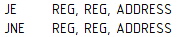
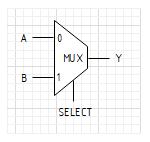

සරල Processor නිර්මාණය
හැඳින්වීම
මෙම කෙටි ලිපි මාලාව මගින් සරල processor එකක් සඳහා Instruction Set නිර්මාණය, Verilog භාවිතයෙන් Single-cycle processor නිර්මාණය සහ Multi-cycle processor නිර්මාණය, Assembler මෘදුකාංග නිර්මාණය සහ FPGA එකකට අප විසින් නිර්මාණය කල processor එක synthesize කිරීම ආවරණය කිරීමට බලාපොරොත්තු වේ.
මෙහි අන්තර්ගතය සම්බන්ධව ඔබ හට යම්කිසි ගැටලුවක් ඇත්නම් ruchira66@gmail.com යන email ලිපිනය මගින් මා සම්බන්ධ කර ගත හැක.
රුචිර හසරංග
http://www.hasaranga.com
සරල Instruction Set එකක් නිර්මාණය කරමු
Processor එකක් නිර්මාණය කිරීමේ මුල් පියවර වනුයේ Instruction Set එකක් නිර්මාණය කිරීමය. Instruction Set එක යනු මෘදුකාංග සහ දෘඪාංග එකිනෙක සම්බන්ද වන අතුරු මුහුණතය (Interface). Instruction Set එක නිර්මාණයට පලමුව අප විසින් processor එක තුල ඇති register ගණන, register එකක ඇති bit ප්රමාණය අර්ථ දක්වා ගත යුතුය.
අප විසින් නිර්මාණය කිරීමට බලාපොරොත්තු වන්නේ 8bit RISC වර්ගයේ processor එකකි. එම නිසා processor එක තුල ඇති registers වල bit ප්රමාණය 8bit වේ. මෙය සරල වර්ගයේ processor design එකක් වන බැවින් registers 4ක් පමණක් ප්රමාණවත් වේ. ඒවා පිළිවෙලින් AX, BX, CX සහ DX ලෙස නම් කර ගමු.
මෙය RISC වර්ගයට අයත් වන නිසා සෑම instruction එකක් ම සමාන bit ප්රමාණයකින් යුක්ත වේ. Instruction එකක් 16 bit ලෙස සලකා එහි අන්තර්ගතය පහත පරිදි අර්ථ දක්වා ගනිමු.
opcode එකක් යනු processor එකට ලබාදෙන උපදෙස හඳුනාගැනීමට ඇති කේතයයි. opcode එකක් සඳහා bit 4ක් වෙන් කිරීමෙන් අපට එකිනෙකට වෙනස් කේත 16ක් යොදා ගත හැකි බව ඔබට පෙනෙනු ඇත. opcode එක සඳහා bit 4ක් වෙන් කිරීමෙන් පසුව ඉතිරි වන 12 bit ඉඩ ප්රමාණයේ බෙදී යාම තීරණය කල යුත්තේ Instruction Operands නිර්ණය කිරීමෙන් පසුවය. Instruction Operands යනු instruction එක ක්රියාත්මක කිරීමට අවශ්ය අමතර දත්තයන් ය. මෙහිදී Immediate values, Registers සහ Addresses යන පරාමිතීන්(parameters) instruction operands යටතට අයත්වේ.
දැන් අප, අපට අවශ්ය වන instructions සහ ඒවායේ operands වෙන වෙනම අර්ථ දක්වා ගනිමු.
ADD, SUB, AND, OR Instructions : සරල ගණිතමය කාර්යයන් ඉටු කරගැනීම සඳහා arithmetic instructions කිහිපයක් අපට අවශ්යවේ. ඒවා පහත පරිදි දැක්විය හැක.
මෙහිදී WREG යනුවෙන් නම් කර ඇත්තේ modify/write කිරීමට ලක් වන register එකයි. Instruction set එක පොදු ආකෘතියකට ගැනීම සඳහා සෑම විටම destination එක පලමු operand එක ලෙස යොදා ඇත.
දැන් අප ADD instruction එක සලකා බලමු. එමගින් අප සිදු කිරීමට බලාපොරොත්තු වන්නේ දෙන ලද register දෙකක එකතුව තවත් register යක් වෙත යොමු කිරීමටයි.
උදා: ADD $CX, $AX, $BX
ඉහත assembly instruction එක මගින් අපේක්ෂා කරනුයේ CX = AX + BX යන කාර්යයයි. මෙහිදී register එකක නම භාවිතා කරන විට සම්මතයක් ලෙස $ ලකුණ මුලට(prefix) යොදා ඇත.
අනෙකුත් instructions වන SUB, AND, OR යන ඒවා ද ADD instruction එක ආකාරයටම ක්රියාත්මක විය යුතුය. SUB මගින් අඩු කිරීමද, AND මගින් binary AND operation එකද, OR මගින් binary OR operation එකද ක්රියත්මක විය යුතුය.
LOAD, STORE Instructions : Programming වලදී variables සඳහා අවශ්ය ඉඩ ලබා ගනුයේ RAM එක තුලිනි. RAM එක Data Memory එක ලෙසද හඳුන්වයි. Data Memory එක සමග ගණුදෙනු කිරීමේදී එයට values write කිරීම හෝ එයින් read කිරීමට අවශ්ය instructions අප විසින් නිර්මාණය කරගත යුතුය. LOAD instruction එක මගින් Data Memeory එකෙන් values read කර register එකකට write කිරීම සිදු කරන අතර STORE instruction එක මගින් register එකක ඇති value එකක් Data Memory එකට write කිරීමට බලාපොරොත්තු වේ.
උදා: LOAD $DX, 42
ඉහත instruction එක මගින් සිදුවනුයේ Data Memory එකේ 42 memory location එකේ ඇති value එක DX register ය වෙත යොමු කිරීමයි. (සැ.යු. මෙහිදී DX register එක වෙත යොමු වනුයේ 42 නොව 42 memory location එකේ ඇති value එක බව මතක තබා ගත යුතුය.)
LOADI Instruction : Immediate value එකක් register යක් වෙත ඇතුලු කිරීමට LOADI instruction එක භාවිතා කරයි.
උදා: LOADI $DX, 42
ඉහත instruction එක මගින් සිදුවනුයේ 42 යන අගය DX register එක වෙත ඇතුලු කිරීමයි.
JMP Instruction : Programming කරන විට සමහර අවස්ථා වල දී processor එක යම් යම් code blocks වෙත jump කිරීමට සිදුවේ. ඒ සඳහා අප භාවිත කරන්නේ JMP instruction එකයි. තවද, embedded program එකක් සැමවිටම loop එකක් තුල ක්රියා කරන අතර එම loop නැමති construct එක නිර්මාණය වනුයේ JMP instruction එක මගිනි.

උදා: JMP 42
ඉහත instruction එක මගින් සිදුවනුයේ processor එක 42 වන instruction location එක වෙත යොමු කිරීමයි.
JE, JNE Instructions : Program එකක් තුල යම් යම් decision ගැනීමට සිදුවන අවස්ථා වලදී අප භාවිතා කරනුයේ if else constructs වන අතර එම constructs implement කිරීමට JE සහ JNE instructions භාවිතා කරයි. JE මගින් jump if equal ද JNE මගින් jump if not equal ද නිරූපනය කෙරේ.
උදා: JE $AX, $BX, 42
ඉහත instruction එක මගින් සිදුවනුයේ AX සහ BX register වල අන්තර්ගතය සමාන දැයි පරීක්ෂා කර සමාන නම් 42 වන instruction address එක වෙත processor එක යොමු කිරීමයි. අසමාන නම් සාමාන්ය පරිදි next instruction එක වෙත processor එක යොමු වේ.
උදා: JNE $AX, $BX, 42
ඉහත instruction එක මගින් සිදුවනුයේ AX සහ BX register වල අන්තර්ගතය සමාන දැයි පරීක්ෂා කර අසමාන නම් 42 වන instruction address එක වෙත processor එක යොමු කිරීමයි. සමාන නම් සාමාන්ය පරිදි next instruction එක වෙත processor එක යොමු වේ.
IN, OUT Instructions : Processor එකකට data memory එකට අමතරව විවිධ peripherals සමග ගණුදෙනු කිරීමටද instructions අවශ්යවේ. IN instruction එක මගින් දෙන ලද peripheral එකකින් read කිරීමද OUT instruction එක මගින් peripheral එකකට write කිරීමද සිදුකෙරේ. Peripheral එක තේරීම සඳහා එහි address එකද read කරගත් value එක store කිරීමට register එකක් ද මෙම instructions වල operands ලෙස සැපයිය යුතුය.
උදා: IN $AX, 42
ඉහත instruction එක මගින් සිදුවනුයේ 42 වන address එකෙහි ඇති peripheral එකෙන් read කර ප්රතිඵලය AX register එක වෙත යොමු කිරීමයි.
උදා: OUT 42, $AX
ඉහත instruction එක මගින් සිදුවනුයේ AX register එකෙහි ඇති අගය 42 වන address එකෙහි ඇති peripheral එකට write කිරීමයි.
දැන් අප විසින් සරල processor එකකට අවශ්ය වන සියලුම instructions හා ඒවායේ operands අර්ථ දක්වා අවසන් බැවින් instruction bit fields අර්ථ දැක්වීම සිදුකල යුතුව ඇත. Instruction bit fields මගින් opcode එක සහ operands වලට වෙන් කෙරෙන bit ප්රමාණය එනම් මුලදී සඳහන් කල ඉතිරි 12 bit ඉඩ ප්රමාණයේ බෙදීයාම නිර්ණය කෙරේ.
අපගේ processor එකේ ඇති register ගණන 4ක් වන බැවින් bit 2කින් register යක් නිරූපණය කිරීමට පුළුවන. නිර්මාණය කිරීමේ ක්රියාවලිය සරල කරගැනීම සඳහා 8bit values යොදා ගනිමු. තවද address එකක් සඳහාද bit 8ක් යොදා ගනිමු. එවිට අප හට භාවිතා කල හැකි උපරිම memory/instruction address range එක 256 කට සීමා වනු ඇත.
REG1 සඳහා සෑමවිටම 9-8 bits ද, WREG සඳහා 11-10 bits ද, value හෝ address සඳහා 7-0 bits ද වෙන් කර ඇත. JE/JNE සහ ADD/SUB/AND/OR instructions සැලකීමේදී REG2 සඳහා එකම bit range එක යොදා ගැනීමේ හැකියාවක් නොමැත.
සැ.යු. Operand එකක bit range එක වෙනස් වන අවස්ථා වලදී multiplexer එකක් යෙදීමට සිදුවන බැවින් හැකි සෑම විටම එකම bit range එක operand එකක් සඳහා භාවිතා කල යුතුය. එසේ කිරීමෙන් අපට පරිපථ නිර්මාණය සරල කර ගත හැක.
ADD/SUB/AND/OR instructions සඳහා එකම op code එක යොදා ගැනීමට බලාපොරොත්තු වන අතර ALU.OP field එක මගින් අදාල ADD/SUB/AND/OR ක්රියාකාරිත්වය ලබා දෙනු ඇත. (මෙම instructions වලදී අපගේ processor එක ක්රියාත්මක වනුයේ එකම ආකාරයට වන අතර ALU operation එක පමණක් වෙනස් වේ.)
දැන් අප instruction set එක නිර්මාණය කර අවසන්ය. සරල ක්රියාකාරිත්වයක් සඳහා මෙම instruction set එක ප්රමාණවත් වේ.
Single-cycle RISC Pocessor එකක් නිර්මාණය කරමු
Processor එකක් ආරම්භක මොහොතේ සිට අවසානය දක්වා එකම ක්රියාවලියක (cycle) නිරත වේ. එනම් Fetch, Decode සහ Execute යන කාර්යයන් 3යි. Fetch මගින් ඊලඟ instruction එක Instruction Memory එකෙන් ලබා ගන්නා අතර Decode මගින් instruction එකට අදාල actions තීරණය කරනු ලබයි. Execute මගින් අදාල actions ක්රියාත්මක කරනු ලබයි.
සෑම processor එකක්ම clock signal එකකට අනුව ක්රියාත්මක වේ. Single-cycle processor එකක විශේෂත්වය වනුයේ clock cycle 1ක් තුලදී fetch, decode, execute යන කාර්යයන් 3ම සිදු වීමයි.
දැන් අප මෙම single-cycle processor එක තුල ඇති ප්රධාන units කිහිපයක් සලකා බලමු.
Program Counter : මෙය සාමාන්ය 8bit register එකකි. මෙහි clock pin එකක් සහ reset pin එකක් ඇති අතර සෑම clock pulse එකකදීම input value එක output එක වෙත යොමු කෙරේ.
Program Counter එකෙහි ප්රධාන කාර්යය වනුයේ දැනට execute කරන instruction address එක store කර ගැනීමයි.
Instruction Memory : මෙමගින් සිදුවනුයේ දෙන ලද address එකට අදාල instruction එක නිකුත් කිරීමයි. සාමාන්ය ව්යවහාරයේ දී ROM එක ලෙසද මෙය හඳුන්වයි.
අප විසින් ක්රමලේඛණය කරනු ලබන program එක ගබඩා කර තබනු ලබනුයේ මෙම instruction memory එක තුලය.
Register File : අපගේ processor එකෙහි ඇති AX, BX, CX සහ DX යන registers පිහිටා ඇත්තේ මෙය තුලය. මෙමගින් එම registers වලට write කිරීම සහ ඒවා read කිරීම සිදු කල හැක.
REG1 සහ REG2 මගින් read කිරීමට අවශ්ය registers තේරීමට හැකි අතර DATA1 සහ DATA2 මගින් ඒවාට අදාල values වෙන වෙනම නිකුත් කෙරේ. තවද සෑම clock pulse එකක දීම REGWR හි අගය HIGH නම් WREG මගින් තෝරා ඇති register එකට WDATA හි ඇති අගය ඇතුලත් වේ.
මෙම register file එක මගින් එකවර register 2ක් read කරන අතරතුර එක් register යකට write කිරීමද සිදු කල හැක.
ALU : Arithmetic logic unit (ALU) යනු ගණිතමය සහ bitwise operations සිදු කිරීමට ඇති combinational circuit එකකි.
OP හි අගය අනුව ALU එකෙහි ක්රියාකාරිත්වය වෙනස් වන අයුරු ඉහත වගුවේ දක්වා ඇත. ZERO අග්රය භාවිතා කරනුයේ A හා B අගයන් සංසන්දනය කිරීමේදීය. OUT එක බින්දුව වන සෑම අවස්ථාවකදීම ZERO අග්රයෙහි අගය HIGH වේ. A හා B අගයන් සමාන දැයි පරීක්ෂා කිරීමේදී OP හි අගය 01 (substract) ලෙස යොදා ZERO අග්රයෙහි අගය පරීක්ෂා කරනු ලැබේ.
Data Memory : සාමාන්ය ව්යවහාරයේදී මෙය RAM එක ලෙස හඳුන්වන අතර variables store කිරීමට මෙය භාවිතා කරයි. අපගේ processor එක 8bit address values භාවිතා කරන නිසා මෙහි ඇති උපරිම memory location ගණන 256 කට සීමා වේ.
ADDR මගින් අවශ්ය memory location එක තේරිය හැකි අතර DATA අග්රයන් මගින් එම memory location එකෙහි ඇති අගය නිකුත් කරයි. සෑම clock pulse එකකදී ම WR හි අගය HIGH නම් ADDR මගින් තෝරා ඇති location එකට WDATA හි ඇති අගය ඇතුලත් වේ.
Peripherals : බාහිර ලෝකය සමග කටයුතු කිරීමේ දී gpio pins සහ timers අපට වැදගත් වේ. ඒ සඳහා අප විසින් peripherals unit එකක් භාවිතා කරනු ලැබේ. (මෙහි input pins 8ක් සහ output pins 8ක් පිහිටා ඇති අතර ඒවා මෙම සටහනේ දක්වා නොමැත.)
ADDR වෙත ලබා දෙන අගය අනුව අපට peripheral එක select කල හැක. ඉහත වගුව අනුව 0 මගින් GPIO ද 1 මගින් TIMER එකද select කල හැක.
සෑම clock pulse එකකදීම WR හි අගය HIGH නම් ADDR මගින් තෝරා ඇති peripheral එකට WDATA හි ඇති අගය write වන අතර WR හි අගය LOW නම් ADDR මගින් තෝරා ඇති peripheral එකෙන් read කර එය DATA වෙත යොමු කෙරේ.
GPIO peripheral එක වෙත write කරන 8bit values එහි output pin වෙත යොමු වන අතර GPIO peripheral එකෙන් read කරන විට එහි input pin වල අගයන් 8bit value එකක් ලෙස ලබා දේ.
Timer peripheral එක වෙත value එකක් write කරන සෑම විටම එහි ඇති timer එක restart වන අතර timer peripheral එකෙන් value එකක් read කරන විට timer overlfow status එක ලබා දෙනු ඇත.
Multiplexers : මෙමගින් අපට අවශ්ය input එකක් output එක සමග සම්බන්ද කල හැකිය. මෙහි input bit count එක output එකෙහි bit count එකට අනිවාර්යයෙන් ම සමාන විය යුතුය.
ඉහත multiplexer එකෙහි select වෙත 0 ලබා දුන් විට Y(output) සමග A(input) සම්බන්ද වන අතර 1 ලබා දුන්විට Y(output) සමග B(input) සම්බන්ද වේ.
Adder : මෙමගින් සිදුවනුයේ A හා B හි ඇති අගයන් වල එකතුව Y වෙත යොමු කිරීමයි.
දැන් අප විසින් සරල processor එකකට අවශ්ය වන සියලුම units හඳුනාගෙන අවසන්ය. ඊලඟ කාර්යය වනුයේ data path එක නිර්මාණය කිරීමය.
Data path එක යනු processor එක තුල දී දත්ත ගමන් කරන මාර්ගයයි. සලකන ලද අවස්ථාවේ දී execute වන instruction එක අනුව එම ගමන් මාර්ගය වෙනස් වේ. එබැවින් අප විසින් එක් එක් instruction එකට අනුරූප data path වෙන වෙනම සලකා බැලිය යුතුය.
දැන් අප මෙම සරල processor එකෙහි data path එක ක්රම ක්රමයෙන් ගොඩ නගමු.
ඉහත පරිපථය සලකා බලන්න. Program counter එකෙහි output එක adder එකක් වෙත යොමු කර ඇති අතර adder එක මගින් program counter output එකට 1ක් එකතු කර ප්රතිඵලය නැවත program counter එකෙහි input එක වෙත ලබා දේ. එනම් සෑම clock pulse එකකදීම program counter එකෙහි අගය 0 සිට එකින් එක වැඩි වන ආකාරයට මෙම පරිපථය නිර්මාණය කර ඇත.
Program counter එකෙහි output එක instruction memory එක වෙත යෙදීමෙන් අපට 0 සිට 255 දක්වා වූ address range එකේ සියලුම instructions ලබා ගත හැක.
ඉහත පරිපථය මගින් සෑම clock pulse එකකදී ම instruction memory එක තුල ඇති instructions එකින් එක පිලිවෙලින් නිකුත් කරනු ඇත.
දැන් අප JMP instruction එක සඳහා data path එක නිර්මාණය කරමු.
JMP instruction එකෙහි bit fields නිරීක්ෂණය කරන විට 7-0 bits වලින් නිරූපණය වනුයේ program counter එක යොමු විය යුතු address එක බව පෙනෙනු ඇත. එම නිසා ඉහත පරිපථයේ multiplexer එකෙහි ImmToPC අග්රය HIGH වන විට instruction එකෙහි 7-0 bits වලින් ලබා දෙන අගය PC වෙත යොමු වන ආකාරයට පරිපථය සම්බන්ධ කර ඇත.
ImmToPC අග්රයේ value එක තීරණය කරනුයේ Control Unit එක මගිනි. අප විසින් control unit එක තවම නිර්මාණය කර නොමැති අතර data path එක සම්පූර්ණ කර අවසන් වූ පසු එය නිර්මාණය කරමු.
Instruction memory එකෙන් instruction එකක් නිකුත් වූ පසු control unit එක එම instruction එක read කර එය JMP instruction එක නම් ImmToPC අග්රය HIGH කරනු ලබයි. එවිට JMP instruction එකෙහි ලබා දී ඇති address value(7-0 bits) එක multiplexer එක විසින් PC වෙත යොමු කරයි. ඊළඟ clock pulse එකේ දී PC එක තුලට එම address එක ඇතුලත් වනු ඇත.